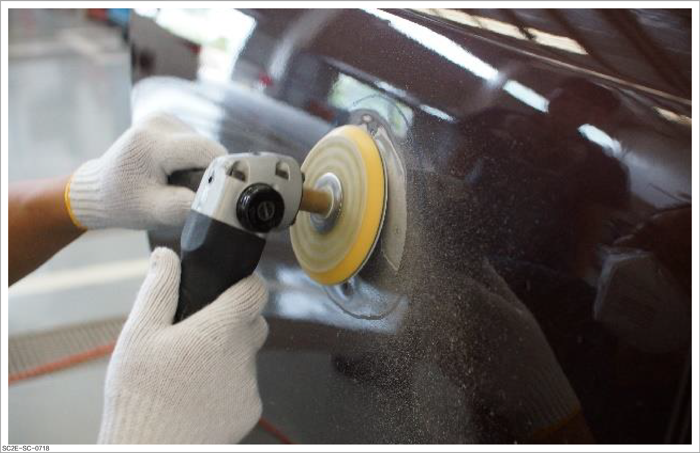
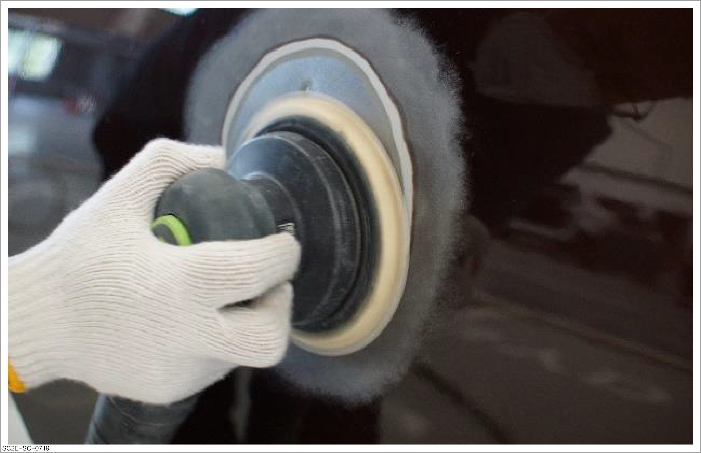
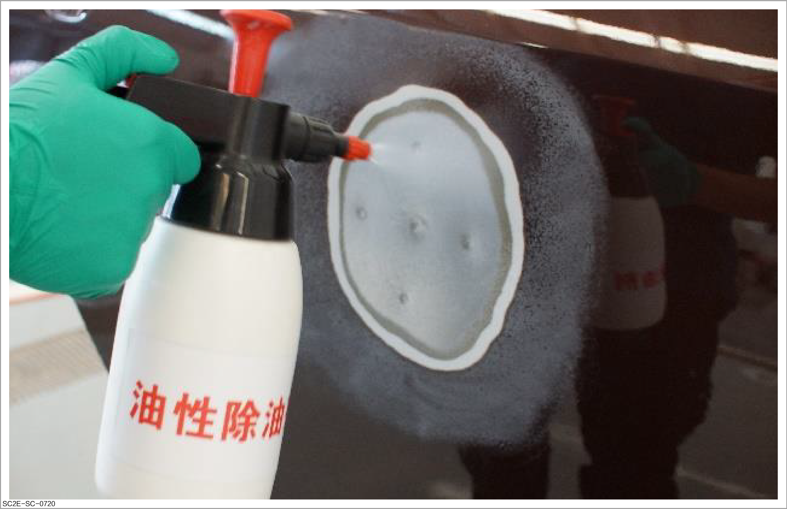
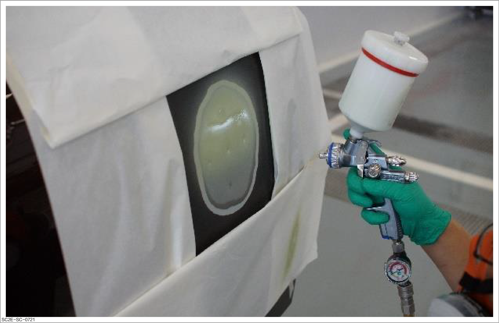
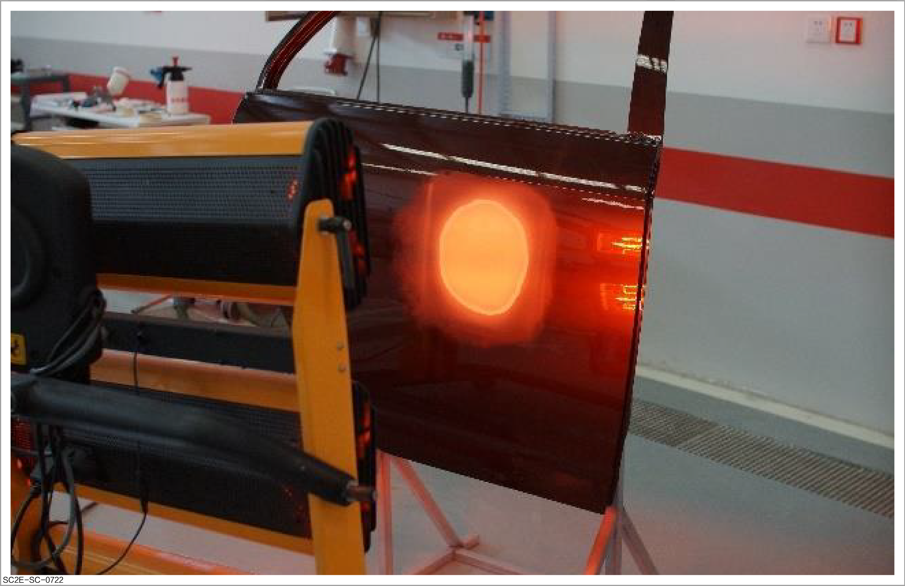

Primer spraying

-
During operation, please take safety protection measures as required. For details of safety protection, please refer to Spraying protection
-
Before operation, please carefully read and observe site safety and vehicle protection. For details, please refer to Site safety and vehicle protection
-
Before the primer spraying, evaluate and repair the damaged part. For details, refer to How to repair the outer panel
-
For repair of the plastic part, spray the plastic primer. Refer to How to repair plastic parts

Spraying of epoxy primer mainly aims to:
-
Fill up and improve the substrate surface: The epoxy primer has good leveling and filling performance, which can fill up cracks, holes, unevenness and other defects on the surface, providing a smooth and uniform foundation for subsequent coatings.
-
Enhance the adhesion of the paint film: Through physical and chemical action, the epoxy primer can form a dense paint film on the surface of the substrate, greatly enhancing the adhesion of the top coating to the substrate and preventing the coating from peeling off or falling off.
-
Improve corrosion resistance: The epoxy primer has excellent chemical stability, and can effectively resist the erosion of various chemicals and solvents, and significantly improve the corrosion resistance of coated surface.
This document introduces the spraying method of metal primer, which is similar to that of plastic primer.
Operation method
-
Remove old coatings
ReminderIf the old coating has been removed in sheet metal repair, this step can be ignored.
-
Protect panels or assembly parts that have not been disassembled adjacent to the grinding area with masking tape.
-
Use sandpaper #60 or #80 to grind and remove the coating along the same range as the marked circle.
Caution-
Make the grinder contact with the panel first, and then start the grinder.
-
If certain part has been ground too long, overheating and deformation will occur.
-
When grinding the coating, if the grinder moves from the steel panel to coating, it is difficult to eliminate wrinkles and the coating will be over-ground, consequently increasing the width of feather edge.
-

-
-
Make feather edges.
-
Adjust the angle of the double-action grinder, and move the grinder 30 mm around the outside of the circle to grind the feather edges using grinding head #5/7 and sandpaper #120-180.
ReminderFor deep scratches that do not cause metal deformation and cracking of the paint coating, use a double-action grinder in conjunction with P240-320 sandpaper to remove the scratches and grind into the feather edges, then apply the intermediate paint for filling without applying poly-putty.
-
After grinding, ensure a smooth transition between the steel panel and the old coating, and grind a surface with a width of approximately 30 mm on the outer side of the feather edge.
Caution-
If the feather edge is not smooth, poly-putty marks will form when the sprayed paint coat is dried.
-
Make the grinder contact with the steel panel before switching it on to avoid deep scratches.
-
The qualified standard of the feather edge is that the width must reach 20-30 mm. When checking by hand, ensure that the transition between the coating and the steel panel is smooth.
-

-
-
Clean and degrease.
CautionInadequate cleaning can result in peeling or blistering of the coating.
-
Clean the panel with two degreasing cloths: wet cloth and dry cloth. Or operate with a solvent spray pot.
-
After removing all dirt or dust on the surface of the panel with the wiping paper and detergent, blow air with a high-pressure pneumatic gun to the panel surface to remove dust.

-
-
Apply epoxy primer.
CautionMasking is required prior to application. For details, refer to Masking methods and skills
-
Apply a thin layer of epoxy primer to the prepared metal surface by a brush or spray gun, and ensure that the completely exposed metal is covered after application.

-
To improve work efficiency, a short-wave infrared heating lamp can be used to heat the epoxy primer. For specific time requirements, refer to the product manual.

-
Further guidance
- Application of sheet metal poly-putty
-
How to perform color mixing:
-
How to spray: